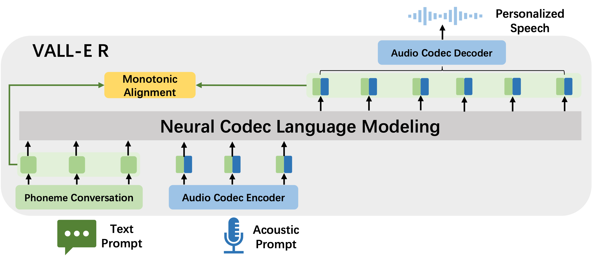
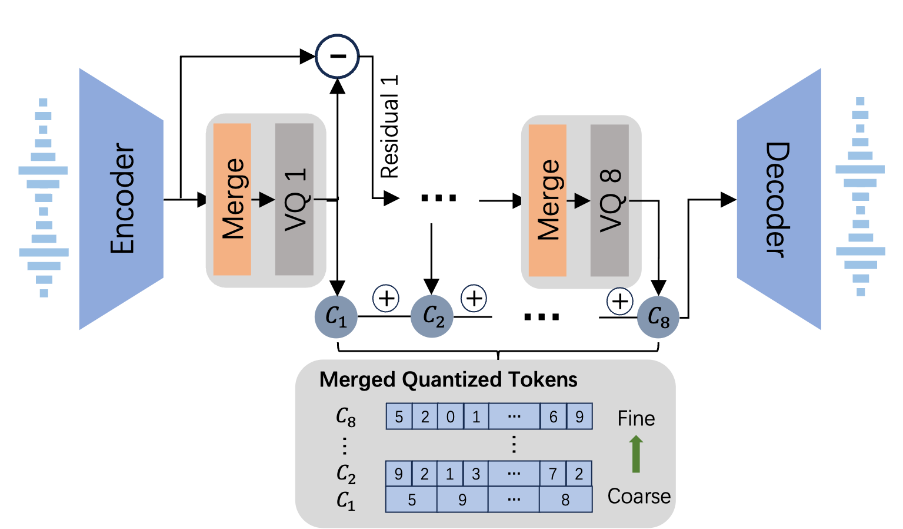

VALL-E R: Robust and Efficiency Zero-Shot Text-to-Speech via Monotonic Alignment
Abstract
With the help of discrete neural audio codecs, large language models (LLM) have increasingly been recognized as a promising methodology for zero-shot Text-to-Speech (TTS) synthesis.
However, sampling based decoding strategies bring astonishing diversity to generation, but also pose robustness issues such as typos, omissions and repetition. In addition, the high sampling rate of audio also brings huge computational overhead to the inference process of autoregression.
To address these issues, we propose VALL-E R, a robust and efficient zero-shot TTS system, building upon the foundation of VALL-E. Specifically, we introduce a phoneme monotonic alignment strategy to strengthen the connection between phonemes and acoustic sequence, ensuring a more precise alignment by constraining the acoustic tokens to match their associated phonemes.
Furthermore, we employ a merge codec approach to downsample the discrete codes in shallow quantization layer, thereby accelerating the decoding speed while preserving the high quality of speech output.
Benefiting from these strategies, VALL-E R obtains controllablity over phonemes and demonstrates its strong robustness by approaching the WER of ground truth in experimental results. In addition, it requires fewer autoregressive steps during inference, resulting in over 60% time savings in inference time.
This page is for research demonstration purposes only.
Architecture Overview

The overview of VALL-E R. It incorporate phoneme information (green) when predict audio codec (blue), which can enhance the connection between phoneme and audio to improve the robustness of decoder-only transformer TTS model.
Samples of Merge Codec

The architecture of proposed Merge Codec. Through the Merge module, the code in the first layer is downsampled twice, meaning that every two adjacent codes in the first layer are the same. The other layers remain unchanged.
Text: Text transcription.
Ground Truth: Original speech waveform.
Encodec: Speech waveform reconstructed by Encodec.
Merge Codec: Speech waveform reconstructed by proposed Merge Codec.
| Text |
Ground Truth |
Merge Codec |
Encodec |
Samples for Continue Voice Clone
Text: Text transcription.
Ground Truth: Original speech waveform.
Prompt: The acoustic prompt.
VALL-E: Speech waveform generated by baseline VALL-E.
VALL-E R: Speech waveform generated by proposed VALL-E R.
| Text Prompt |
Prompt |
VALL-E R |
VALL-E |
Ground Truth |
Samples for Cross-Sentence Voice Clone
Text: Text transcription.
Prompt: The acoustic prompt.
VALL-E: Speech waveform generated by baseline VALL-E.
VALL-E R: Speech waveform generated by proposed VALL-E R.
| Text |
Prompt |
VALL-E R |
VALL-E |
Samples for Prosody Control
Text: Text transcription.
Prompt: The acoustic prompt provide timbre.
Prosody Reference: The acoustic prompt provide prosody.
VALL-E R: Speech waveform generated by proposed VALL-E R conditioned on timbre and prosody.
| Text |
Prompt |
Prosody Reference |
VALL-E R |
Samples for Hard Samples
Text: Text transcription.
Prompt: The acoustic prompt.
VALL-E: Speech waveform generated by baseline VALL-E.
VALL-E R: Speech waveform generated by proposed VALL-E R.
| Text |
Prompt |
VALL-E R |
VALL-E |
Ethics Statement
Since VALL-E R could synthesize speech that maintains speaker identity, it may carry potential risks in misuse of the model, such as spoofing voice identification or impersonating a specilic speaker. We conducted the experiments under the asumption that the user agree to be the taret speaker in speech synthesis. If the model is generalized to unseen speakers in the real world, it should include a protocol to ensure that the speaker approves the use of their voice and a synthesized speech detection model.